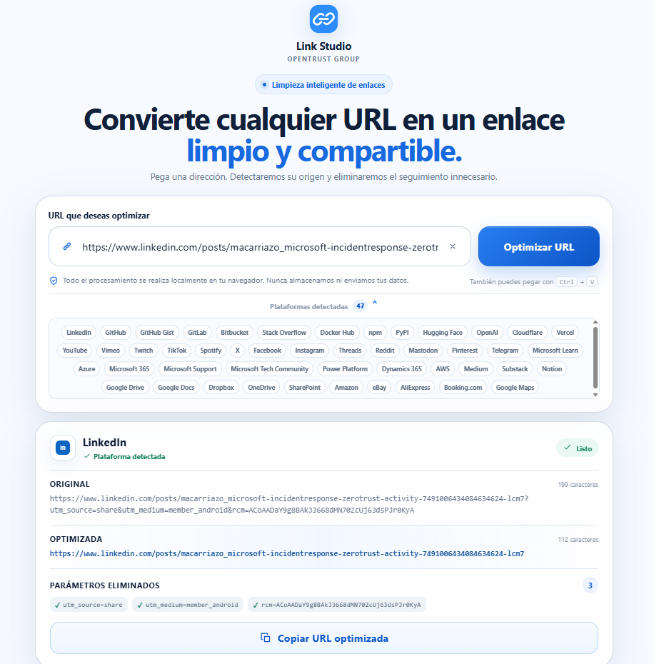

Pegar
Introduce la URL que quieres revisar o compartir.
APLICACIÓN OPENTRUST · LOCAL-FIRST
Analiza, comprende y limpia un enlace antes de compartirlo.
Una herramienta directa y sin distracciones: pega una URL, detecta su plataforma, identifica parámetros innecesarios y genera una versión limpia lista para copiar.

FLUJO ÚNICO
Sin menús, paneles, estadísticas o configuraciones que compliquen una tarea sencilla.
Introduce la URL que quieres revisar o compartir.
Reconoce automáticamente la plataforma y el dominio.
Identifica parámetros de seguimiento y elementos prescindibles.
Genera una versión más limpia y comprensible del enlace.
Entrega la URL final lista para utilizar.
PRINCIPIOS